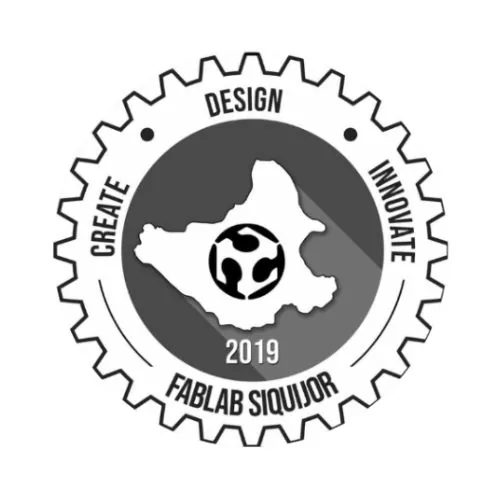

FabLab Siquijor
Siquijor State College · Region XVIII: NIR
FabLab Siquijor is the digital fabrication laboratory of Siquijor State College, located in Larena, the capital municipality of Siquijor in the Negros Island Region. As one of the more remote FabLabs in the Philippine national network, the center plays a crucial role in making advanced manufacturing and prototyping technologies accessible to the island province — extending digital fabrication access to students, entrepreneurs, and community members in an island traditionally known for its natural beauty, eco-tourism, and artisanal crafts.
- Category
- Fabrication Laboratory (FabLab)
- Host institution
- Siquijor State College
- City
- Larena, Siquijor
- Region
- Region XVIII: NIR
- Operating status
- Operating
About the Center
The center is part of the nationwide DTI-supported FabLab network, providing standard fabrication services to MSMEs and aspiring innovators across Siquijor's growing tourism, agriculture, and handicraft sectors.
Programs & Services
- 3D printing for product prototyping and model making
- Laser cutting and engraving for handicrafts, signage, and product customization
- CNC milling/routing for wood and material fabrication
- Vinyl cutting for graphics, labels, and packaging design
- CAD workstations for product design and digital ideation
- Fabrication support for local MSMEs in tourism, crafts, and agriculture sectors
- Open fabrication access for students and community innovators across Siquijor
Contact
Sources & references
- dtiwebfiles.s3.ap-southeast-1.amazonaws.com/BSMED/MED/FabLabsBrochure-15Sep…
- siquijorstate.edu.ph/ssc-fabrication-laboratory-fablab-team-at-fabfest-2025…
Details are drawn from public records and the sources above, July 2026.
Startupreneur Innovation Hub · synced from the Notion catalog (July 2026) · status: published.